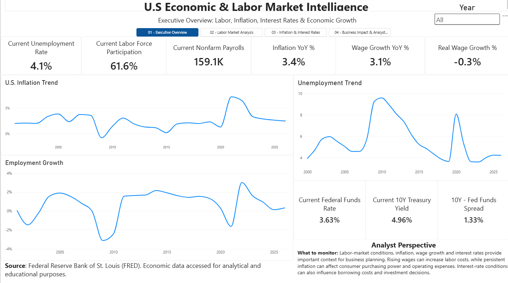

Developed a four-page interactive Power BI dashboard analyzing U.S. economic and labor market trends using eight FRED datasets. Leveraged Power Query, DAX, and data modeling to visualize inflation, employment, wages, interest rates, and GDP, transforming complex economic data into actionable business insights.

In this Project, I develeped an interactive Power BI dashboard to analyze investment portfolio performance, utilizing Power Query, DAX, and Excel to create dynamic KPIs, visualizations, and actionable insights.
Developed an interactive Tableau project analyzing U.S. housing market trends, affordability, and investment potential across metropolitan areas. Integrated five datasets using Excel Power Query and Tableau to build three dashboards highlighting home values, rental growth, mortgage costs, and key financial metrics.
Analyzed U.S. unemployment data using SQLite to identify labor market trends and regional differences. Applied SQL techniques including aggregations, filtering, grouping, and sorting to uncover economic insights and demonstrate data analysis skills.
Analyzed retail sales data using SQLite to evaluate revenue, customer spending, product performance, and order trends. Applied SQL techniques including aggregations, CTEs, and window functions to uncover business insights from £24,705 in sales across 989 transaction records.